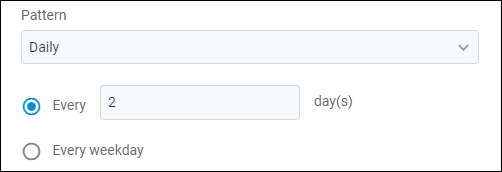
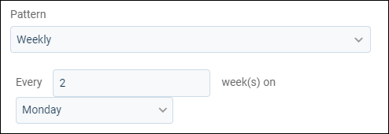
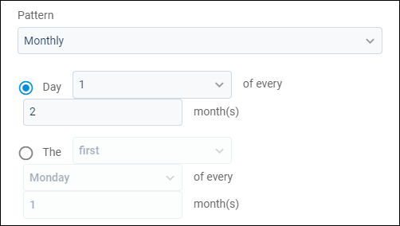
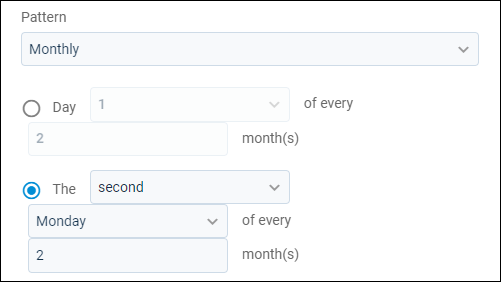
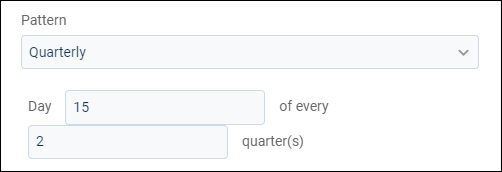
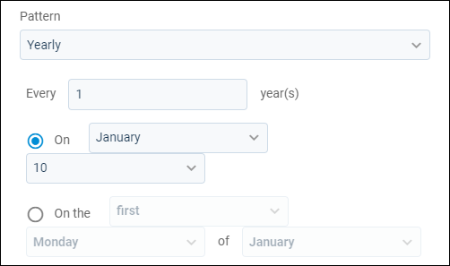
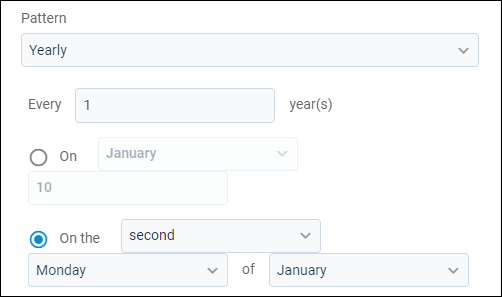

Source: https://rmxhelp.rentmanager.com/Topics/Express/Action/Report-Batch-Schedule.htm
Schedule a Report Batch
Scheduling your report batches ensures reports are sent on time and reduces the resources needed to generate these reports. If you regularly run and send the same handful of reports, you have likely created a report batch that groups those reports so you can send them all at once easily. To further simplify this process, you can schedule report batches to automatically generate and email the report results based on the date(s), frequency, and email address(es) you specify. For example, you can schedule report batches that can automatically send reports to the owner for you every month, such as monthly reports informing owners of their properties' status.
More Information
Reports in the report batch you want to schedule can use relative dates to ensure you always get the most recent data based on when the automation was run. To update these settings, go to  arrow_forward
arrow_forward  Manage Batches and select the report batch you want to update. There, you can see each report's options in the report batch, and relative dates can be selected where available.
Manage Batches and select the report batch you want to update. There, you can see each report's options in the report batch, and relative dates can be selected where available.
Related Privileges
| Group | Privilege | Column |
|---|---|---|
| Letter/Email Templates/Reports/Packets | Run reports | Enabled |
| Automated Report Batches | Enabled |
For more information, refer to Control User Access.
To schedule a report batch, do the following:
-
Go to
 arrow_forward Manage Batches.
arrow_forward Manage Batches. -
For the desired report batch, click
 arrow_forward Schedule.
arrow_forward Schedule.
The Schedule Report Batch pop-up opens. -
Check Active to enable this schedule.
-
In the Schedule Options section, set the First Run Date fields to the date and time you want your batches to begin automatically generating.
Warning
If you enter a date in the past, the automation does not retroactively run reports that would have occurred before the current date. The automation always starts with the next occurring run date from the date you create it.
-
Set the Pattern field to the option that matches the frequency you want to send the selected report batch. To set the frequency at which your report batch automatically runs, you can select one of the following options:
Option Description Daily
The first option under Daily sets the number of days that must pass before running the report batch again. For example, enter 2 to generate the report batch every other day.
The second option under Daily runs the report batch every Monday, Tuesday, Wednesday, Thursday, and Friday.

Weekly
The number of weeks that must pass before running the report batch again. Also set in this option are the days of the week the report batch runs on. For example, enter 2 in the first field and select Monday in the second field to generate the report batch on the Monday of every other week.

Monthly
The first option under Monthly sets the number of months that must pass before running the report batch again. Also set in this option is the day of the month the report batch runs on. For example, select 1 in the first field and enter 2 in the second field to have the report batch generated on the first day of every other month.

The second option under Monthly sets the number of months that must pass before running the report batch again. Also set in this option are the specific week of the month and weekday the report batch runs on. For example, select second, Monday, and 2 to generate the report batch every other month on the second week on Monday.

Quarterly
The number of quarters that must pass before running the report batch again. Also set in this option is the day, from the beginning of the quarter, the report batch runs on. For example, enter 15 in the first field and 2 in the second field to have the report batch generated every other quarter on the fifteenth day.

Yearly
The field directly under Yearly sets the number of years that must pass before running the report batch again. For example, enter 1 for the report batch to generate every year. Then use one of the options below that field to set when exactly the report batch runs.
The first option sets the specific month and day of that month the report batch runs on. For example, select January in the first field and 10 in the second field to generate the report batch in January on the tenth.

The second option sets the month, specific week of the month, and weekday the report batch runs on. For example, select, second, Monday, and January to generate the report batch in January on the second week on Monday.

-
Set the End field to one of the following options:
Option Description Never End
Generates the report batch indefinitely.
Number of Runs Remaining
The number of times the report batch generates before ending.
End By
The report batch schedule stops on the date selected.
-
In the Email Options section, enter the following information to set up the email sent with the report batch results:
Field Description From Name
The name that displays as the sender name for the report batch.
To
The email address(es) of everyone to receive the report batch results. Use a semicolon (;) to separate multiple addresses.
Bcc
The email address(es) of everyone to receive the report batch results but not seen by other recipients. Use a semicolon (;) to separate multiple addresses.
Subject
A short description to inform the recipient of the email’s contents.
Message
The body of the email with any additional details you want the recipients to know about the attached reports. This field displays the same way to each recipient. To keep messages appropriate for all recipients, you can use relative terms.
File Name
If applicable, a name for the attached report batch results file.
Format
The format in which report batch results display.
-
Click Save.
The schedule is saved and the report batch is automatically generated on the selected date(s) and time(s), then sent to the recipients.